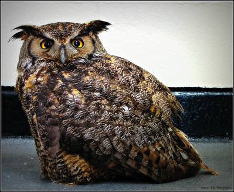

 Owls are a specific kind of bird through out the world! They belong to the Tytonidae and Strigidae families. These Amazing creatures have been around 60-57 million years ago, making them one of the oldest known groups of non-Galloanserae landbirds.They.
These birds rely heavily on sound and sight while hunting. They use their amazing eye sight paired with their pin-point hearing to snatch prey from underneath up to 2 feet of snow! Their vision is 10x to 100x better than a human's, only requiring 1/100th of the light a human requires to see.